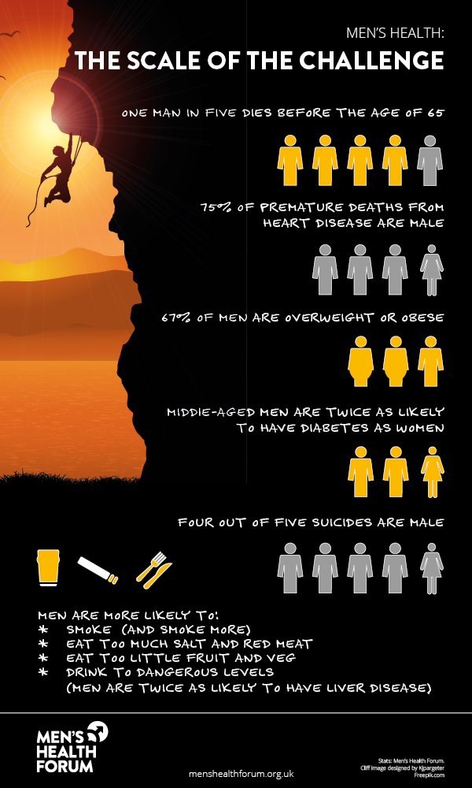
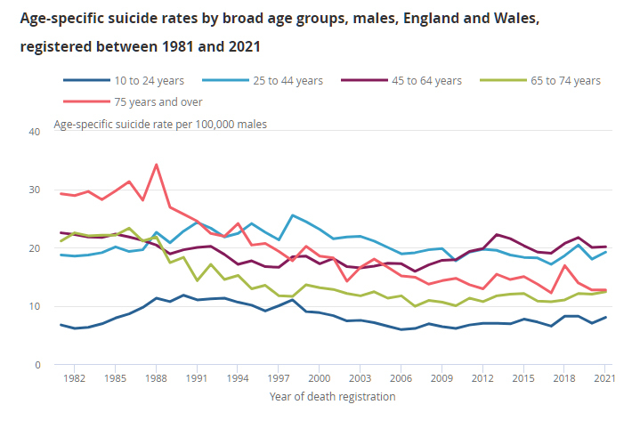

Facts about men's health
 10 essential facts to keep in mind about men's health
- Heart Health: Men are more likely to develop heart disease than women. Factors like high blood pressure, high cholesterol, and smoking significantly contribute to heart issues. Regular exercise and a healthy diet can help lower these risks.
- Prostate Health: Prostate cancer is one of the most common cancers in men. Regular screenings and discussions with a healthcare provider about the risks and benefits of testing are crucial, especially for men over 50 or those with a family history.
- Mental Health:Men can face challenges in discussing and seeking help for mental health issues. Depression and anxiety affect men, but they might express these feelings differently, such as through anger or irritability. Encouraging open conversations and seeking support when needed is important.
- Testicular Health:Testicular cancer is more common in younger men. Regular self-exams can help in early detection. It's also important to be aware of any changes in size, shape, or lumps in the testicles.
- Weight Management: Men are prone to carrying excess weight around the abdomen, which can increase the risk of various health issues like diabetes, heart disease, and certain cancers. Regular exercise and a balanced diet are key.
- Substance Abuse: Men are more likely than women to engage in excessive drinking and substance abuse. These habits can have severe consequences on overall health, including mental health and organ function.
- Regular Checkups:Many men avoid regular check-ups or visits to the doctor unless they feel seriously unwell. However, routine check-ups can catch problems early or help prevent them altogether.
- Bone Health:Osteoporosis is often seen as a condition affecting women, but it's also a concern for men, especially as they age. Getting enough calcium and vitamin D and engaging in weight-bearing exercises can help maintain bone health.
- Sexual Health:Issues like erectile dysfunction or low testosterone levels can affect men's sexual health. It's essential to have open discussions with healthcare providers to explore available treatments and solutions.
- Work-Life Balance: Balancing work, family, and personal time is crucial for overall well-being. Stress from work or other life pressures can significantly impact men's health.
Remember, each person's health needs are unique. Regular communication with healthcare providers, maintaining a healthy lifestyle, and seeking help when needed are vital for men's health and well-being.
Links to more facts about men's health
For more information and facts on mens mental health,maybe take a look at some of the links below.